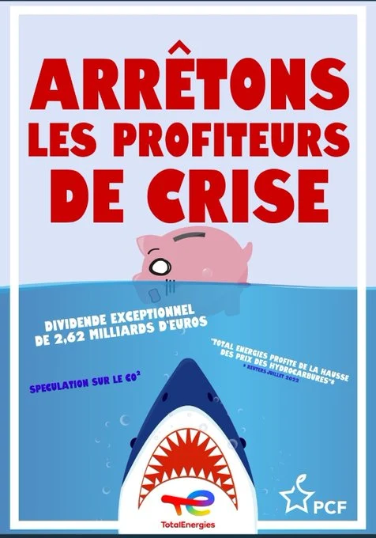
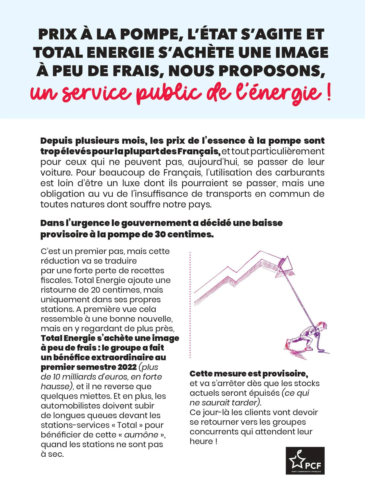
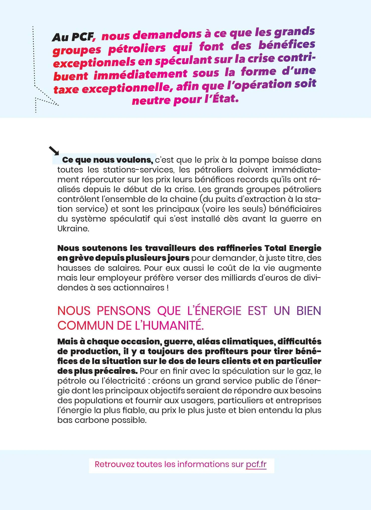

Publication relayée
Énergie. Un document de campagne contre les profiteurs de crise
Date indiquée par Facebook · 13 octobre 2022
Repères éditoriaux
Les visuels accompagnent une publication sur les prix de l’électricité et les choix énergétiques.
Texte conservé avec la publication
CRÉONS UN GRAND SERVICE PUBLIC DE L’ÉNERGIE



Sources
Archive rouge · export Facebook · AR-0002-FB-01842
À lire aussi · Présentation de la proposition de loi sur le service public de l’énergie · Le lien vidéo